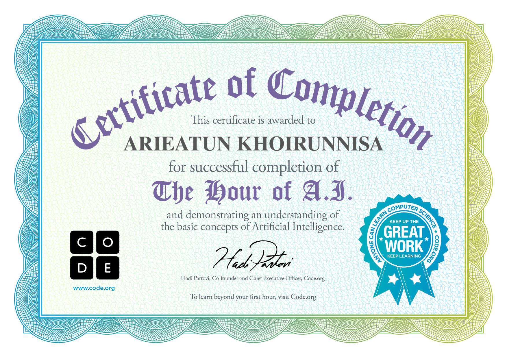

<!DOCTYPE html>
<html lang="en">
<head>
  <meta charset="UTF-8">
  <meta name="viewport" content="width=device-width, initial-scale=1.0">
  <meta http-equiv="X-UA-Compatible" content="ie=edge">
  <title>STOP BULLYING
DON’T BE SILENT, SPEAK UP
</title>
  <link rel="stylesheet" href="Nisaa.css">
</head>
<audio controls="true">
  <source src="audio.mp3">
</audio>
<body>
  <marquee behavior="" direction="">
<h1>STOP BULLYING
DON’T BE SILENT, SPEAK UP
</h1>
</marquee>

<h2>Nama:Arieatun khoirunisa</h2>
<h2>Kata pengantar</h2>
<p>Assalamualaikum wr.wb 
Dengan mengucapkan puji syukur kehadirat Tuhan Yang Maha Esa atas rahmat 
dan hidayat-Nya, sehingga kami dapat menyelesaikan makalah ini dengan sebaikba</p>
<p>Kami mengucapkan terimakasih kepada semua pihak yang telah membantu dalam 
penyusunan makalah ini. Dan kami juga menyadari pentingnya akan sumber bacaan 
dan referensi internet yang telah membantu dalam memberikan informasi yang akan 
menjadi bahan makalah. </p>
<p>Kami menyadari bahwa makalah ini masih banyak kekurangan dan kelemahan 
baik dalam penyairan maupun isinya. Kritik dan saran dari bapak tetap kami harapkan 
guna perbaikan dan penyempurnaan untuk belajar kedepanya. Semoga makalah ini 
dapat bermanfaat dan senantiasa menjadi sumber belajar bagi teman-teman.
</p>
<h2>Bab I</h2>
<h2>Pendahuluan</h2>
<h3>1.1 Latar belakang</h3>
<p>Bullying sering terjadi di sekolah dan lingkungan sehari-hari yang memakan 
jiwa. Aksi bullying ini merugikan korban. Hingga mempengaruhi psikisnya. 
Fenomena bullying menyebabkan pelaku bertindak semena-mena pada korban. 
Perilaku bullying bertentangan dengan UUD 1945 pasal 28B ayat 2 yang berbunyi. 
“menyatakan bahwa setiap anak berhak atas kelangsungan hidup,tumbuh dan 
berkembang,serta berhak atas perlindungan dari kekerasan dan diskriminasi”.</p>
<p>Peristiwa bullying sering terjadi di sekolah,di rumah,tempat 
kerja,masyarakat,dan sampai dunia maya. Aktivitas bullying tidak memilih umur 
dan jenis kelamin. Para pelaku memilih seseorang dari 
pemalu,pendiam,sepesial,cantik,dan sampai mempunyai kekurangan untuk di 
jadikan ejekan. </p>
<h3>1.2 Rumusan masalah</h3>
<p>1.Apa itu bullying?</p>
<p>2.Apa saja jenis-jenis bullying?</p>
<p>3.Apa dampak bullying</p>
<p>4.Apa penyebab terjadinya bullying?</p>
<p>5.Bagaimana cara mengatasi bullying</p>
<h3>1.3 Maksud dan tujuan</h3>
<p>Maksud dari pelaksanaan projek “cegah perundungan stop bullying “bagi anakanak mengenal pengetahuan hukum tentang bullying adalah untuk memberikan 
pemahaman terhadap anak sekolah menengah atas (SMA) tentang pentingnya 
memahami hukum,mentaati peraturan,hukum yang berlaku,dan juga 
menumbuhkan kesadaran. Sejak dari tentang perlunya menghindari bullying dalam 
kehidupan sehari-hari. </p>
<p>Aturan hukum mengenai bullying terhadap anak sudah di atur oleh negara 
dalam bentuk undang-undang. Sementara pemahaman secara jelas mengenai 
bullying belum di miliki oleh sebagian remaja baik di dalam lingkungan sekolah 
maupun di luar lingkungan sekolah. Padahal perbuatan bullying dapat merugikan 
orang lain bahkan dapat menyebabkan kehilangan masa depan seorang anak yang 
menjadi korban. Perbuatan tersebut sehingga kiranya untuk menghindari terjadinya 
hal-hal yang buruk terhadap siswa siswi maka perlu diharapkan pemahaman 
tentang bullying kepada siswa siswi sekolah menengah atas (SMA)</p>
<h2>Pembahasan</h2>
<h3>2.1 Pengertian bullying</h3>
<p>Bullying adalah segala bentuk penindasan atau kekerasan,yang di lakukan 
secara sengaja oleh satu orang atau kelompok yang lebih kuat. Tujuan dari bullying 
ini untuk menyakiti orang lain dan di lakukan terus-menerus. Kata bullying berasal 
dari bahasa Inggris, sedangkan dalam bahasa Indonesia di sebut penindasan atau 
risak,kasus bullying ini sering terjadi di Indonesia. Contohnya saja kasus 
penindasan di sekolah. </p>
<p>Mengutip buku meredam bullying Ken Riqby konsultan ahli sekolah 
menjelaskan tentang pengertian bullying. Menurut Ken Riqby,bullying adalah 
sebuah hasrat untuk menyakiti. Hasrat ini bisa di lihat dari sebuah aksi yang 
menyebabkan seseorang menderita. Aksi di lakukan oleh seseorang atau kelompok 
mayoritas yang lebih kuat,di lakukan secara berulang,pelaku tidak bertanggung 
jawab dan di lakukan dengan perasaan senang. </p>
<h3>2.2 Jenis bullying</h3>
<p>Perilaku bullying di bagi menjadi beberapa jenis,seperti verbal dan non-verbal. 
Bullying non-verbal berdampak pada ancaman pelaku hingga kekerasam fisik. 
Sedangkan bullying verbal menggunakan kata-kata kasar sampai menyebarkan aib 
korban ke orang lain. Bullying di kelompokkan dalam 6 kategori,yaitu:
</p>
<p>1. Kontak Verbal Langsung 
Bullying berupa tindakan mengancam, mempermalukan, mengganggu, 
memberi panggilan nama, merendahkan, intimidasi, memaki dan menyebarkan 
gosip buruk.
</p>
<p>2. Kontak Fisik Langsung
Pelaku mendorong, menendang, menjambak, memukul, mencakar, mencabut, 
memeras, mengunci seseorang dalam ruangan, hingga menghancurkan barang 
milik orang lain.</p>
<p>3. Perilaku Non-Verbal Langsung
Tindakan bullying melihat sinis, menampilkan ekspresi merendahkan, 
mengancam, mengejek, menjulurkan lidah sampai melakukan kekerasan fisik 
pada korban</p>
<p>4. Perilaku Non-Verbal Tidak Langsung
Tindakan bullying berupa memanipulasi persahabatan mengucilkan atau 
mengabaikan, mengirimkam surat sampai mendiamkan seseorang. </p>
<p>5. Pelecehan Seksual 
Tindakan bullying ini masuk dalam kategori kekerasan fisik atau verbal</p>
<p>6. Cyber Bullying
Tindakan kekerasan dengan cara menyakiti orang lain melalui media sosial. 
Seperti memberi komentar jelek, pencemaran nama baik lewat media sosial, 
dan meneyebarkan rekaman video intimidasi.
</p>
<h3>2.3 Dampak bullying</h3>
<p>Bullying berdampak pada kesehatan mental terutama pada anak-anak dan 
remaja. Pelaku yang melakukan pembullyan bisa memberi pengaruh buruk pada 
kesehatan buruk dan mental korbanya. Dampak paling fatal dari kasus bullying 
adalah Tindakan bunuh diri yang dilakukan oleh korban. </p>
<p>1) Dampak Bullying Bagi Korban </p>
<p>• Memicu depresi, setres, gangguan kesehatan mental, sampai memicu 
kemarahan</p>
<p>• Berdampak pada menurunkan tingkat kecerdasan dan kemampuan analisis 
anak-anak</p>
<p>• Remaja dan anak-anak yang mendapat perilaku bullying akan menurun 
secara akademik dan memilih mengasingkan diri
</p>
<p>2) Dampak Bullying Pada Pelaku </p>
<p>• Pelaku berubah menjadi agresif, menyukai kekerasan, mudah marah, 
impulsif dan toleransi rendah.
</p>
<p>• Kurang berempati dan lebih menyukai mendominasi orang lain.</p>
<p>• Pelaku merasa harga diri tinggi dan percaya diri</p>
<p>• Menyukai kekuasaan untuk merendahkan orang lain</p>
<p>3) Dampak Bullying Bagi Yang Menyelesaikan</p>
<p>• Jika dibiarkan terus menerus, penonton yang menyaksikan bullying merasa 
bahwa perilaku tersebut dianggap biasa. Penonton akan berpikir bahwa 
perilaku ini bisa diterima secara sosial, bahkan bisa meniru perilaku 
terutama anak-anak.</p>
<p>• Para penonton memilih menjadi penindas karna takut mereka akan menjadi 
korban selanjutnya, sedangkan beberapa orang memilih diam tanpa 
bertanya atau menghentikan aksi bullying tersebut.</p>
<p>4) Penyebab Bullying </p>
<p>• Penampilan Fisik
Seseorang yang memiliki penampilan fisik berbeda dari orang lain, bisa 
menjadi target bullying. Para penindas akan mengejek, intimidasi, hingga 
mengancam penampila anak tersebut. Mereka akan menyebut dengan katakata yang menyakiti hati. Tujuan dari kata-kata ini supaya orang itu merasa 
rendah diri sampai terasingkan</p>
<p>• Perbedaan Kelas 
Perbedaan kelas seperti senior dan junior, ekonomi, gender, etnis, dan 
agama bisa memicu tindakan bullying.</p>
<p>• Tradisi Senioritas 
Disekolah sering terjadi tradisi senioritas selama beberapa generasi. Tradisi 
ini menyebabkan korban merasa terintimidasi karena mendapat kekerasan. </p>
<p>• Keluarga
Keluarga besar yang tidak akur bisa mengakibatkan Tindakan bullying 
antar keluarga. 
</p>
<p>• Karakter Seseorang</p>
<p>1. Munculnya sikap dendam atau iri hati</p>
<p>2. Adanya rasa ingin mendominasi hingga menimbulkan kekuasaan 
korban, fisik, dan kekerasan seksual
</p>
<p>3. Persepsi tentang perilaku hormat </p>
<h3>2.5. Cara Mengatasi Bullying</h3>
<p>Bullying bisa diatasi dengan mencegah sejak dini seperti ketika masih anakanak,keluarga,sekolah,dan masyarakat. Berikut beberapa cara mengatasi bully</p>
<p>1) Masa anak-anak</p>
<p>• Beri pengetahuan dan cara untuk mampu melewati tindakan bullying </p>
<p>• Beri contoh cara seperti mendukung, mendamaikan, dan melaporkan pada 
orang dewasa untuk membantu korban bullying</p>
<p>2) Keluarga </p>
<p>• Tanamkan rasa kasih sayang dan nilai keagamaan pada anak-anak</p>
<p>• Beri perhatian dan interaksi pada anak-anak untuk memberikan 
kemampuan berani dan tegas
</p>
<p>• Bantu anak untuk melihat informasi di media sosial dan televisi
</p>
<p>3) Mengatasi Bullying Disekolah
</p>
<p>• Pendidikan membuat program pencegahan anti bullying dan hukuman bagi 
pelaku yang melakukan tindakan tersebut
</p>
<p>• Membangun diskusi dan ceramah tentang mengatasi aksi peninsan</p>
<p>• Memberi bantuan dan dukungan pada korban bullying
</p>
<h2>Penutupan</h2>
<h3>3.1 Kesimpulan</h3>
<p>Tindakan perilaku bullying memberikan dampak negative bagi korban,jenisjenis bullying yang di terima korban snagat fariatif, mulai dari bullying fisik 
hingga bullying non-fisik secara verbal maupun non-verbal. Akibat dari tindakan 
bullying yang di terima,tumbuh kembang diri dan potensi korban menjadi sangat 
terganggu. Akibat dari tindakan perilaku bullying ini keadaan kondisi psikologis 
korban cenderung terganggu, korban menjadi memiliki rasa cemas yang berlebiha, 
merasa rendah hati, sedih, sakit hati, marah, sulit mengobrol, emosi, dan 
korbanpun menjadi memiliki rasa trauma dan depresi. </p>
<p>Keadaan sosial korban terutama di lingkungan sekolah setelah mendapatkan 
Tindakan perilaku bullying menjadi terganggu juga, pasalnya korban menjadi 
cenderung menutup diri, korban memilih diam dan tidak banyka ber komunikasi 
dengan teman-teman di lingkungan sekolahnya, korbanpun menjadi cenderung 
selektif untuk memilih teman, karena takut Ketika korban menerima sembarangan 
teman ia akan mendpatkan Tindakan perilaku bullying yang selama ini telah di 
terimanya. </p>
<p>Faktor penyebab korban mendapat Tindakan perilaku bullying di antaranya 
karena ada kesempatan yang di dapatkan para pelaku dari klemahan korban, seperti 
dari bentuk fisik korban, sifat korban yang cenderung diam dan tidak melawan 
ataupun melapor, serta korban yang tidak memiliki ruang lingkup pertemanan 
yang banyak yang membuat korban leluasa di bulliy oleh para pelaku.
</p>
<h3>3.1 Saran</h3>
<p>Dari kesimpulan diatas, dapat di ajukkan beberapa saran sebagai berikut:</p>
<p>1) Bagi korban bullying</p>
<p>• Sebaiknya jika mendapatkan Tindakan perilaku bullying lebih berani 
untuk melawan pelaku ataupun melapor kepada pihak sekolah seperti 
wali kelas atau guru bk, agar sipelaku kapok dan tidak mengulangi 
perilakunya.
</p>
<p>• Upaya memiliki pertahanan pesikis dan lebih memiliki rasa percaya diri, 
lebih berani, ber akal sehat, dan memiliki kemampuan melihat situasi dan 
menyelesaikan masalah. </p>
<p>• Periksalah cara bersikap yaitu harus bisa tegas, berjalan dengan tegak, 
dan jangan memperlihatkan ketakutan, berbicara tegas, dan percaya diri.
</p>
<p>2) Bagi Pihak Sekolah</p>
<p>• Agar lebih mengedukasi dan membuat semacam informasib bahayabahaya dari Tindakan bullying ataupun ancaman hukum</p>
<p>• Alangkah baiknya pihak sekolah bisa menciptakan kondisi dan suasana 
yang suportif, saling menyayangi, antar pihak sekolah dan para siswa 
siswinya.
</p>
<p>• Membuat atau mengadakan kegiatan yang bersifat positif yang bisa 
membuat hubungan antar siswa menjadi lebih erat dan baik. </p>
<p>3) Bagi Pihak Keluarga atau Orang tua</p>
<p>• Alangkah baiknya sering menjalin komunikasi dengan anak terutama 
perihal kegiatan di sekolah, dengan membuka obrolan terlebih dahulu 
anak akan lebih berpikir mendaptkan dukungan dan memilih bercerita 
tentang bagaimana ia di sekolah. Karena tidak semua anak bisa terbuka 
kepada keluarga atau orang tua. Apalagi tanpa di mulai obrolan dari orang 
tuanya terlebih dahulu. </p>
<p>• Orang tua lebih bisa memupuk keberanian dan rasa percaya diri kepada 
anak-anak</p>
<p>• Orang tua harus lebih mengenal dan mempelajari karakter anak serta 
memperhatikan perilaku-perilaku anaknya</p>
<p>4) Bagi Lembaga Yang Menangani Kasus Ataupun Fenomena-Fenomena 
Terkait</p>
<p>Sebaiknya agar bisa lebih menangani kasus ini dengan serius, karena 
bagi korban maupun pelaku tindakan bullying, mereka sama-sama harus 
mendapat perlindungan, pembelajaran, dan pemahaman.</p>
<h1>STOP BULLYING 
DON’T BE SILENT, SPEAK UP
</h1>
<h1>TAKE CARE OTHER PEOPLE’S FEELINGS
DON’T HURT THEM
</h1>

<body>
</html>